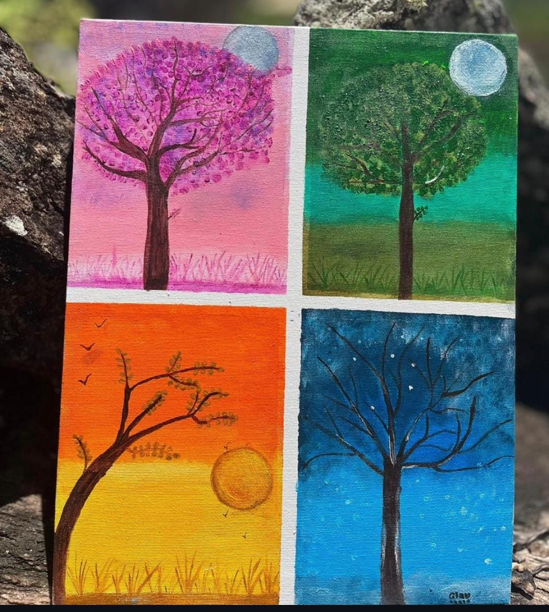
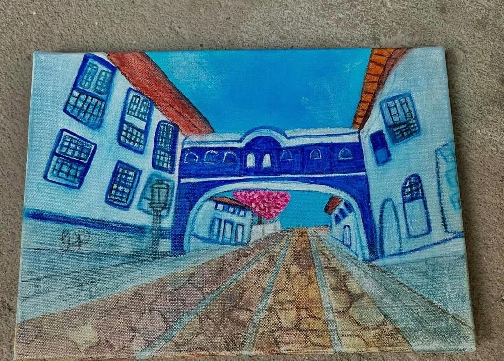
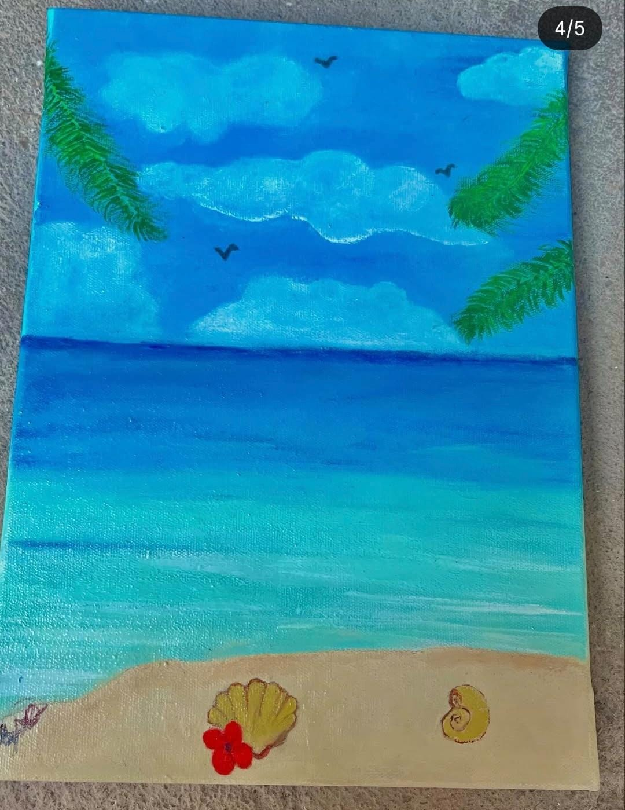
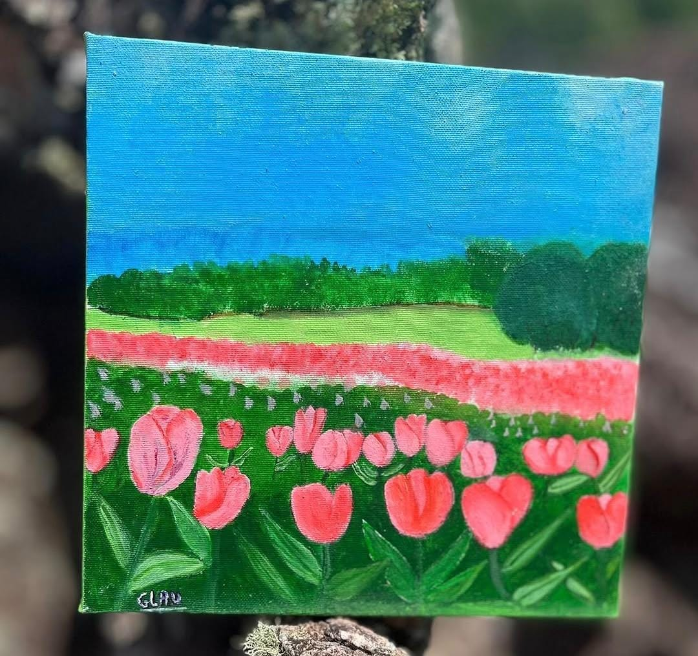
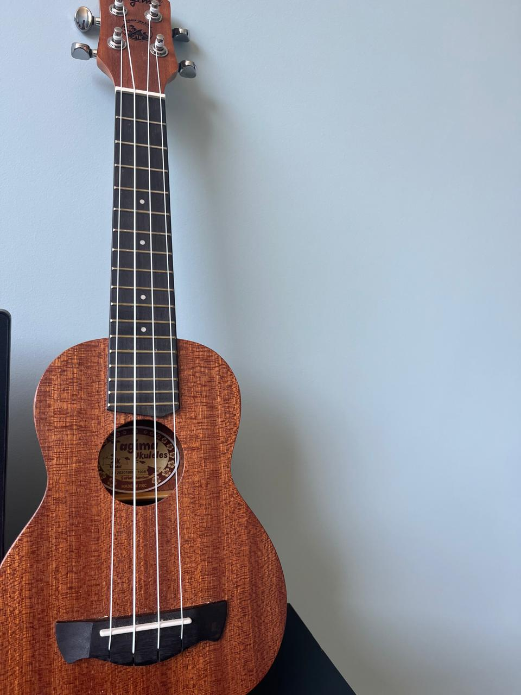
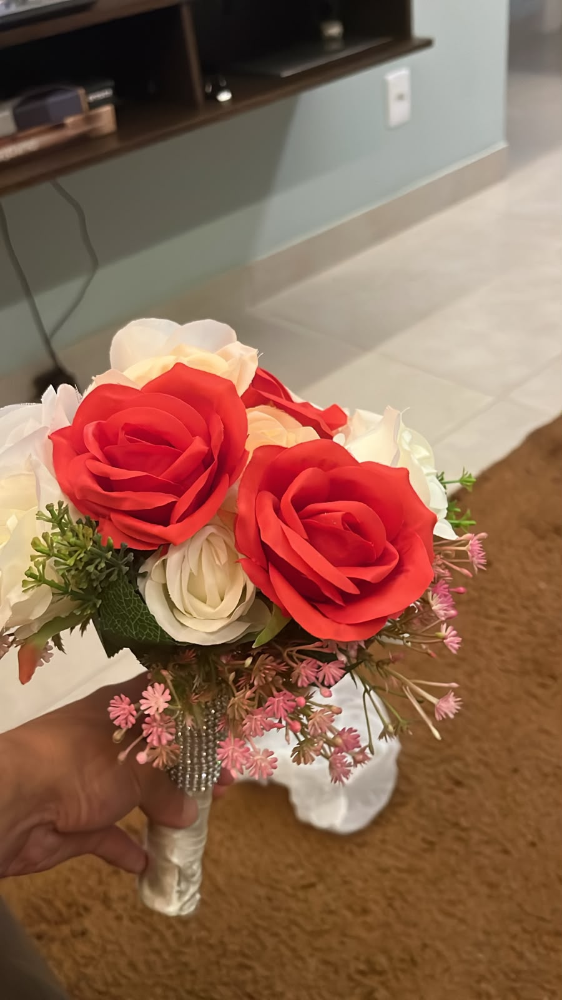
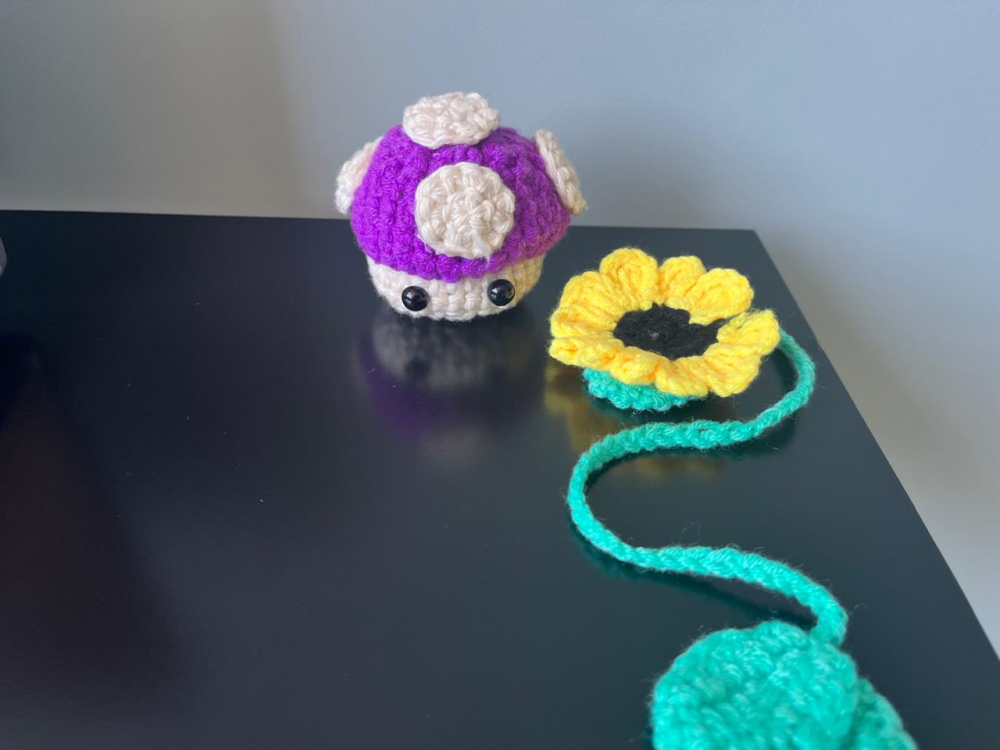

Quem somos
A Mente Conecta é um espaço criado para aproximar pessoas, estimular talentos e abrir caminhos para novas possibilidades.
Acreditamos que cada pessoa tem algo a aprender, ensinar e compartilhar.
Nossas Atividades
🎨 Arte e Pintura
Um espaço para colocar a criatividade em movimento.
Nas oficinas de pintura, cada participante pode experimentar cores, formas e diferentes técnicas, criando livremente e descobrindo novas formas de expressão.
Criar, Experimentar e Expressar.




🎶 Música
A música pode aproximar pessoas, despertar talentos e criar momentos de troca.
Nas oficinas de música, buscamos incentivar o aprendizado de instrumentos, a criatividade e a expressão por meio dos sons.
Aprender juntos também é fazer música.

✂️ Criatividade e Artesanato
Colocar a mão na massa pode transformar uma ideia em algo novo.
As oficinas de criatividade e artesanato propõem atividades práticas que estimulam a concentração, a criatividade e o desenvolvimento de novas habilidades.
Uma ideia pode ser o começo de algo maior.


💻 Tecnologia e Aprendizado
O conhecimento também pode abrir portas.
Oferecemos atividades voltadas ao desenvolvimento de habilidades digitais e conhecimentos que podem contribuir para a vida pessoal, acadêmica e profissional.
Aprender hoje pode criar novas possibilidades amanhã.
💼 Preparação para Novos Caminhos
Recomeçar também é aprender.
Por meio de atividades e oficinas voltadas ao desenvolvimento profissional, buscamos ajudar os participantes a reconhecer suas habilidades, desenvolver novas competências e se preparar para novas oportunidades.
Todo caminho pode ganhar um novo começo.
Cursos disponíveis
💻 Informática Básica
- Computador e celular
- Internet
- Ferramentas digitais
📄 Preparação para o Mercado de Trabalho
- Elaboração de currículo
- Entrevista de emprego
- Comportamento profissional
- Procura por oportunidades
🗣️ Comunicação
- Comunicação no ambiente profissional
- Falar em público
- Trabalho em equipe
- Desenvolvimento da confiança
💰 Educação Financeira
- Organização financeira
- Planejamento
- Orçamento
- Consumo consciente
🌱 Desenvolvimento Pessoal
- Organização
- Definição de objetivos
- Autonomia
- Desenvolvimento de habilidades
🎨 Cursos de Habilidades Práticas
- Artesanato
- Pintura
- Culinária
- Outras habilidades que possam gerar oportunidades de renda
Qual habilidade você gostaria de adquirir?
Quero participar
Você também pode fazer parte dessa conexão.
A Mente Conecta acredita que toda pessoa tem algo a oferecer, aprender ou compartilhar.
Seja participando de uma atividade, aprendendo uma nova habilidade, contribuindo como voluntário ou compartilhando um conhecimento, você pode fazer parte da nossa rede.
Preencha o formulário abaixo na página.
Como você pode participar?
🙋 Conhecer atividades e oficinas.
🤝 Quero ser voluntário.
🎓 Quero fazer um curso.
🎨 Quero ensinar uma habilidade.
Quero fazer uma doação.